What problem does phylorug solve?
Modern phylogenomic studies routinely produce multiple trees from the same set of taxa. Different data types (UCEs, transcriptomes, whole genomes), different analytical strategies (concatenation, coalescent methods, site-heterogeneous models), and different inference software (IQ-TREE, ASTRAL, MrBayes) each yield a tree with slightly different topology and its own support values in its own format. At the same time, no single tree inference method is proven to be the all-rounder.
Incomplete lineage sorting, long-branch attraction, model misspecification, and compositional heterogeneity each affect different methods differently (Fleming et al. 2023). Accordingly, exploring multiple strategies , on different data types and different inference pipelines is the way researchers detect nodes that may be artifacts of a particular analytical choice versus nodes that hold up regardless of method.
The question at every node is:
Does this clade appear in all analyses, and how strongly does each one support it?
Answering that by flipping between tree files is tedious, error-prone, and is very time-consuming with bigger trees. phylorug solves it by drawing a compact coloured grid a rug plot at every internal node of a reference tree(backbone). Each cell represents one tree, its colour shows whether that tree recovered the clade and how strongly it supported it.
Nodal support versus nodal stability
Giribet (2003) drew a distinction that motivates the two modes of phylorug. Nodal support measures how confident a single analysis is in a clade such as bootstrap, posterior probability, or LPP. Nodal stability measures whether that clade is consistently recovered across different analytical strategies, data types, and inference methods, extending Wheeler’s (1995) parameter-space sensitivity analysis framework. These can decouple: a clade may receive 100% bootstrap under one model yet collapse under all others, or carry only 30–50% support everywhere yet appear in every tree.
phylorug shows both. In presence mode, each node gets a
black dot if every analysis recovers the clade (stable), or a rug
showing which analyses recover it and which do not.
support mode builds on it, keeps the same
presence/absence information but adds how strongly each analysis
supports the clade, shading each cell by its support value instead of
just marking it filled or empty. Stable nodes still get a black dot by
default. Setting rug_on_identical = TRUE extends the rug to
these nodes too. It is useful in support mode, since it shows whether a
clade recovered by every analysis is actually supported equally strongly
by all of them.
Brief history
The rug plot concept originated with Wheeler (1995), who plotted clade recovery across gap and transversion–transition cost ratios in parsimony analysis. Giribet (2003) named these plots “Navajo rugs” and showed that nodal support and nodal stability can tell different stories.
Sanders (2010) automated parameter-space sensitivity analysis with Cladescan (Perl), and Machado (2015) extended the approach with YBYRÁ (Python). Both tools produce individual SVG plots per node that must be manually placed onto the tree in a vector editor. Cladescan is no longer available online, and YBYRÁ has been archived by its developer and is no longer maintained. More importantly, both were designed around sensitivity analysis within a single analytical framework, varying parameters and cost schemes, rather than comparing trees from fundamentally different inference pipelines that report support in incompatible formats (e.g.,UFBoot2, SH-aLRT, posterior probability, ASTRAL LPP).
phylorug extends this lineage into R. It reads trees from any pipeline, bins support values against thresholds built for their own metric instead of rescaling everything onto one numeric scale, and draws the rug directly on the reference tree, no manual placement, no outside software.
Quick start
The fastest way to see phylorug in action is with the built-in
sample_trees dataset, a 15-taxon subset of the beetle data
(Montanaro, Lopes et al., 2026), already rooted, pruned, and with tip
labels translated to scientific names. Lets start with attaching the
package :
Load the data
sample_trees is a named list of five phylo
objects, all sharing the same 15 taxa. Pick one as the backbone and use
the rest as comparisons. In the original study 70p_uce is
used as a backbone tree.
Check taxon consistency
check_taxa() compares the tip labels of the backbone
against every comparison tree and reports any mismatches, missing taxa,
extra taxa, or spelling differences. Running it before
node_presence_matrix() is good practice, especially the
first time you work with a new dataset. That said,
node_presence_matrix() will stop with a clear error if a
comparison tree is missing a backbone taxon, so if you already know your
trees share the same taxa you can skip straight to building the matrix
:
check_taxa(backbone, others)
#> All 4 comparison trees share the same 15 taxa as the backbone.
#> [1] TRUE
#> attr(,"diagnostics")
#> comparison status n_taxa missing extra
#> 1 70p_ASTRAL_partition_entropy identical 15
#> 2 70p_ASTRAL_uce identical 15
#> 3 70p_ghost identical 15
#> 4 70p_partition_entropy identical 15All trees share the same 15 taxa, so we can proceed. If a mismatch is
reported the helper function prune_to_shared() can be used
to get identical taxa set.
Build the node presence matrix
Now this is the core computing function of phylorug, the
next question is which clades from the backbone show up in which
comparison trees, and how strongly each one is supported.
node_presence_matrix() answers this by walking every
internal node of the backbone and checking each comparison tree for that
same clade.
It returns a named list: a presence matrix (1 =
clade recovered, 0 = absent), plus one or more support
matrices holding the support values pulled from each tree’s
node labels. By default it reads the first value in each label. If your
trees carry compound labels like 100/98 (SH-aLRT/UFBoot2
from IQ-TREE, for example), support_col picks which one to
use support_col = 1 for the first,
support_col = 2 for the second, or
support_col = c(1, 2) to pull both at once and makes two
support matrices.
Two more arguments belong here. support_type is a named
character vector telling node_presence_matrix() which
support metric each comparison tree uses ("ufboot",
"lpp", "sh_alrt", "posterior").
It gets stored with the result and plot_phylorug() reads it
automatically in support mode, so you only declare it once, here.
pool_threshold matters when a comparison tree file holds
several equally optimal trees (a pool) instead of one. It sets how many
of them need to recover a clade before it counts as present:
1.0 (the default) a strict consensus; 0.5
needs just a majority; 0 skips the cutoff entirely and
records the raw fraction that recovered it. sample_trees is
all single phylo objects, no pools, so
pool_threshold doesn’t come into play here.
We declare support_type now so
plot_phylorug() can bin each tree’s support values against
the right thresholds for its own metric:
support_type <- c(
"70p_ASTRAL_partition_entropy" = "lpp",
"70p_ASTRAL_uce" = "lpp",
"70p_ghost" = "ufboot",
"70p_partition_entropy" = "ufboot"
)
npm <- node_presence_matrix(backbone, others, support_col = c(1, 2), support_type = support_type)The result is a named list. npm$presence is a matrix of
1s and 0s. npm$support_1 and npm$support_2
hold the raw support values, with NA where the clade was
not recovered. These matrices are what plot_phylorug() uses
to draw the rug, presence determines whether a cell is filled or empty,
support determines its shade.
Plot the rug
With the node presence matrix ready, plot_phylorug()
draws the rug on the backbone. In its simplest form, all arguments are
defaults: mode = "presence",
dot_identical = TRUE (unanimous nodes get a black dot),
legend = TRUE, and rug_position = "inside".
The internal scaling engine sizes the canvas, fonts, and cell dimensions
automatically based on tree size.
plot_phylorug(backbone, npm)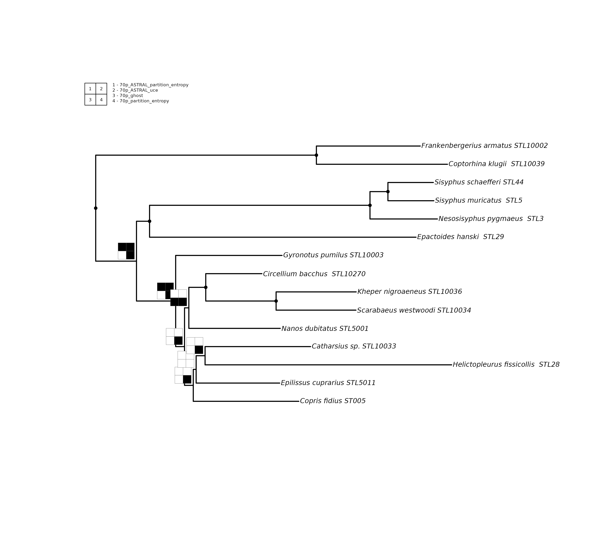
For publication-quality output, setting file,
width, and height is strongly recommended. All
other arguments are worth exploring to fine-tune your figure, but these
three matter most.
plot_phylorug(backbone, npm, file = "presence.pdf", width = 12, height = 8)Support mode
Now switch to support mode to see how strongly each tree supports each clade. Cells are shaded by binned support strength, darker means stronger. Support values are binned against thresholds specific to their own metric: a tree with LPP 0.95 and a tree with LPP 0.65 are compared to LPP thresholds, while a tree carrying UFBoot2 values is binned against UFBoot2 thresholds independently. phylorug never cross-compares values from different support metrics, because LPP 0.95 and UFBoot2 95 do not measure the same thing despite looking numerically similar.
Since we already declared support_type when building the
node presence matrix, plot_phylorug() reads it
automatically from the stored attribute and applies the correct
metric-specific thresholds.
If support_type is not declared,
plot_phylorug() falls back to a universal threshold scale:
values greater than 1 are divided by 100 to bring them onto a 0–1 scale,
and all trees are binned against the same set of thresholds regardless
of metric. This is a reasonable starting point for quick exploration,
but declaring support_type is always preferred because it
ensures each value is evaluated against the thresholds published for its
own method.
plot_phylorug(
backbone, npm,
mode = "support")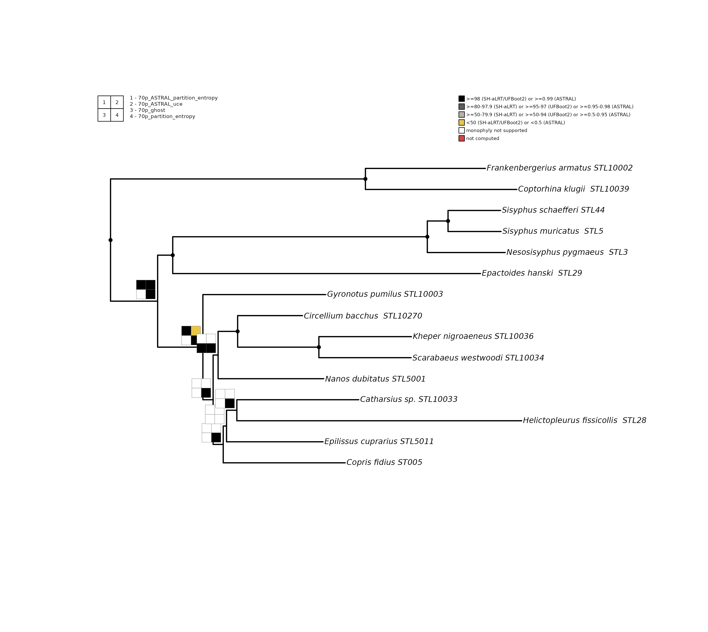
Reading the rug plot
The rug plot carries two legends. The position legend (top-left) maps each numbered cell to a tree. For example, cell 1 is the first tree, cell 2 the second, and so on. The threshold legend (top-right, support mode only) shows what each shade means.
At each node you will see one of these patterns:
-
Black dot: all analyses recover this clade
unanimously (
dot_identical = TRUE, the default). No rug is drawn to reduce clutter. - Mixed grid: some cells filled with solid black, some white. These are the interesting nodes, the position legend tells you which analysis agrees and which disagrees.
-
Bare node (no dot, no rug): no comparison tree
recovers this backbone clade, it exists only in the backbone topology.
This is the default behaviour (
hide_unsupported = TRUE). Sethide_unsupported = FALSEto draw all-white grids at these nodes instead.
In support mode, filled cells are shaded by how strongly each
analysis supports the clade. The colour scheme uses a greyscale gradient
for recovered clades plus two special colours for absent and unparseable
cases. The thresholds shown below are the package defaults. Different
fields and journals apply different cutoffs, so we recommend defining
your own via the thresholds argument (see the Customisation
section below):
- Black: very high support (UFBoot2 >= 95, SH-aLRT >= 80, LPP >=0.95).
- Dark grey: high support (UFBoot2 80-94, SH-aLRT 70-79, LPP 0.90-0.94).
- Light grey: moderate support (UFBoot2 50-79, SH-aLRT 50-69, LPP 0.50-0.89).
- Yellow: low support (below 50 for UFBoot2/SH-aLRT, below 0.50 for LPP). Present but weakly endorsed.
- White: clade not recovered by that analysis.
- Red: clade recovered but no support value could be read. This typically means the tree file had no node labels, or the label was not a parseable number.
Fine-tuning the figure
The following example shows how optional arguments refine the plot.
rug_on_identical = TRUE extends the rug to unanimous nodes,
revealing per-tree support strength even at stable clades.
hide_unsupported = FALSE would draw all-white rugs at nodes
unique to the backbone; the default (TRUE) leaves them
bare. cell_scale adjusts the size of each rug cell,
rug_position controls whether rugs sit toward the root
("inside") or toward the tips ("outside").
dot_cex scales the unanimous-node dot, and
show_support = TRUE with support_label_cex and
support_label_col overlays the backbone’s own support
labels on the tree. cex and font are passed
directly to the tree plotter. For publication output, add
file = "output.pdf" along with width and
height to produce a properly scaled figure.
# For publication output, add:
# file = "my_support_plot.pdf"
plot_phylorug(
backbone, npm,
width = 6.5,
height = 5.8,
mode = "support",
rug_position = "inside",
cell_scale = 0.38,
rug_on_identical = TRUE,
cex = 0.90,
font = 3,
dot_cex = 1.3,
show_support = TRUE,
support_label_col = "red",
support_label_cex = 0.4
)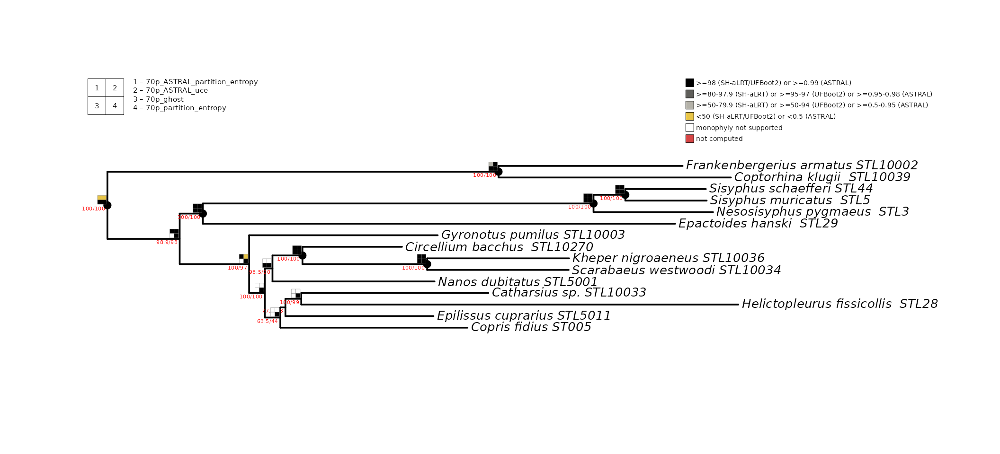
Working with real data: Culicomorpha
The built-in Culicomorpha dataset contains 10 phylogenomic analyses of 46 taxa from eight Diptera families (Fu et al., 2025), covering IQ-TREE partitioned, PMSF, LG+C20+F+R, and ASTRAL strategies.
Read the trees
read_trees() scans a directory for tree files and
returns a named list:
tree_dir <- system.file("extdata", "culicomorpha", package = "phylorug")
trees <- read_trees(tree_dir)
#> Read 10 analyses (10 trees) from: /home/runner/work/_temp/Library/phylorug/extdata/culicomorpha
names(trees)
#> [1] "Matrix1_LG_C20_F_R" "Matrix1-kpi_ASTRAL"
#> [3] "Matrix1-kpi_partitioning" "Matrix1-kpi_PMSF(H1.guide)"
#> [5] "Matrix1-kpi_PMSF(H2.guide)" "Matrix1-smart_ASTRAL"
#> [7] "Matrix1-smart_partitioning" "Matrix1-smart_PMSF(H1.guide)"
#> [9] "Matrix1-smart_PMSF(H2.guide)" "Matrix2_partitioning"Root and remove the outgroups
The Culicomorpha trees include three outgroup taxa from
outside the infraorder: Phlebotomus chinensis and Clogmia
albipunctata (Psychodidae) and Coboldia fuscipes
(Scatopsidae). Root on all three, then drop them. The order
matters, you must root while the outgroup tips are still present,
because ape::root() needs to find them in the tree:
trees <- lapply(trees, function(tr) {
tr <- ape::root(tr, outgroup = c("Coboldia_fuscipes",
"Phlebotomus_chinensis",
"Clogmia_albipunctata"),
resolve.root = TRUE)
ape::drop.tip(tr, c("Coboldia_fuscipes",
"Phlebotomus_chinensis",
"Clogmia_albipunctata"))
})The Culicomorpha trees already carry species names as tip labels, so
no translation is needed here. For trees with specimen codes, see
translate_tips() in the beetles example below.
Choose a backbone
Pick one analysis as the backbone. The remaining trees are comparisons:
backbone <- trees[["Matrix1-kpi_PMSF(H1.guide)"]]
others <- trees[names(trees) != "Matrix1-kpi_PMSF(H1.guide)"]Check taxon consistency
check_taxa(backbone, others)
#> All 9 comparison trees share the same 43 taxa as the backbone.
#> [1] TRUE
#> attr(,"diagnostics")
#> comparison status n_taxa missing extra
#> 1 Matrix1_LG_C20_F_R identical 43
#> 2 Matrix1-kpi_ASTRAL identical 43
#> 3 Matrix1-kpi_partitioning identical 43
#> 4 Matrix1-kpi_PMSF(H2.guide) identical 43
#> 5 Matrix1-smart_ASTRAL identical 43
#> 6 Matrix1-smart_partitioning identical 43
#> 7 Matrix1-smart_PMSF(H1.guide) identical 43
#> 8 Matrix1-smart_PMSF(H2.guide) identical 43
#> 9 Matrix2_partitioning identical 43Build the matrix and plot
support_type <- c(
"Matrix1-kpi_ASTRAL" = "lpp",
"Matrix1-smart_ASTRAL" = "lpp",
"Matrix1-kpi_partitioning" = "sh_alrt",
"Matrix1-kpi_PMSF(H2.guide)" = "sh_alrt",
"Matrix1_LG_C20_F_R" = "sh_alrt",
"Matrix1-smart_partitioning" = "sh_alrt",
"Matrix1-smart_PMSF(H1.guide)" = "sh_alrt",
"Matrix1-smart_PMSF(H2.guide)" = "sh_alrt",
"Matrix2_partitioning" = "sh_alrt"
)
npm <- node_presence_matrix(backbone, others, support_type = support_type)plot the phylorug-presence
plot_phylorug(backbone, npm)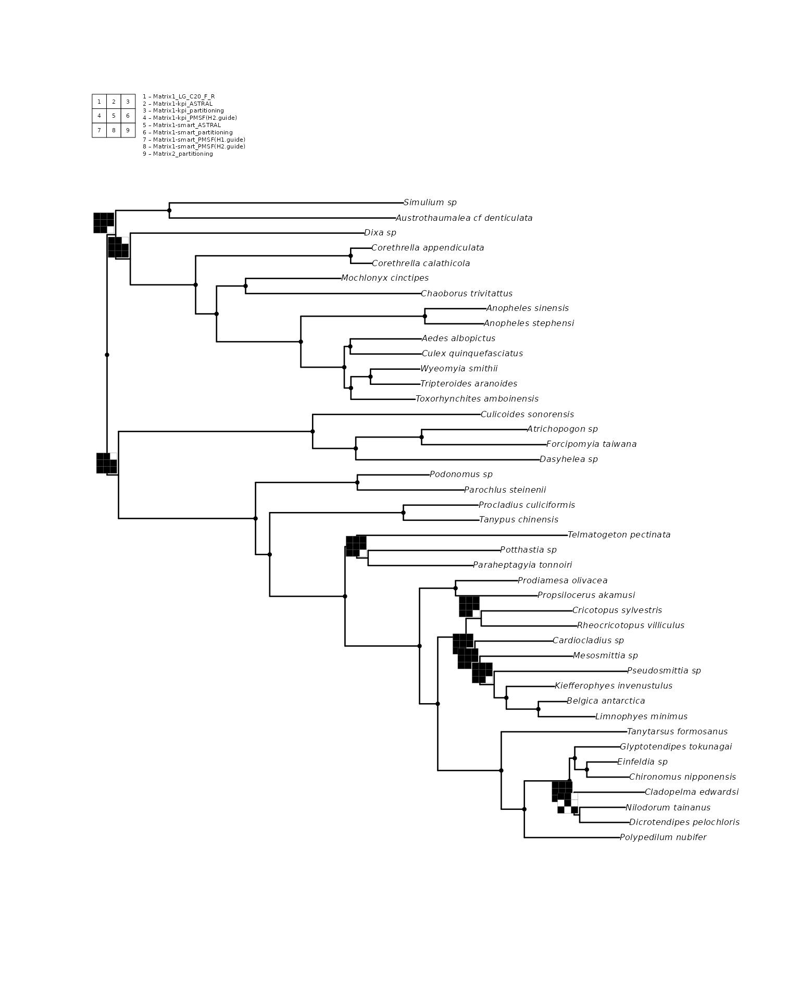
With 9 comparison trees, phylorug automatically arranges the rug grid (3 columns by 3 rows in this case). The position legend maps each cell position to an analysis name.
support-mode
Here we use show_support = TRUE to overlay the
backbone’s own node labels in red for cross-referencing and
cell_scale = 0.35 to shrink the rug cells slightly for a
denser tree. All-white rugs are hidden by default, so only contested and
stable nodes remain visible.
plot_phylorug(backbone, npm,
mode = "support",
show_support = TRUE,
support_label_cex = 0.25,
support_label_col = "red",
cell_scale = 0.35,
rug_position = "inside",
rug_on_identical = FALSE)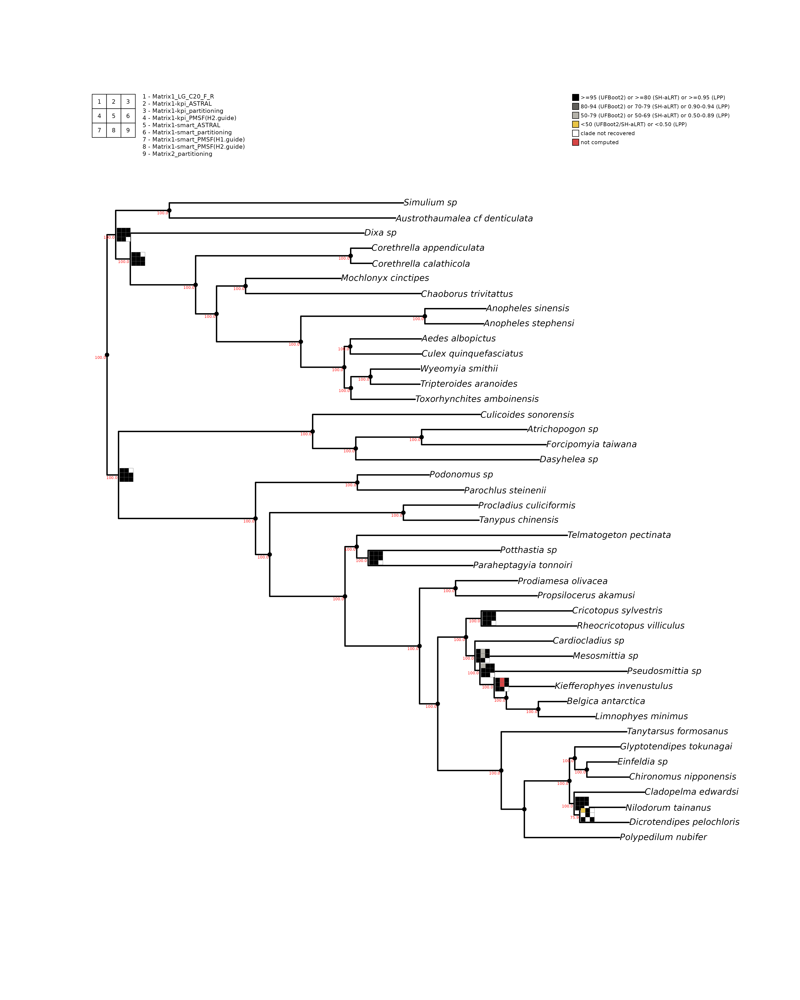
What the rug reveals?
The rugs immediately separates stable from contested regions of the Culicomorpha tree. Most family-level clades carry black dots, meaning those clades are recovered by unanimously all analyses. Culicidae (mosquitoes), Chironomidae (non-biting midges), Ceratopogonidae (biting midges), and the Simuliidae + Thaumaleidae clade all show complete agreement across every inference method and dataset. Fu et al. (2025) reported the same, full support for these clades regardless of model or matrix.
The interesting nodes are the contested ones. The central question in Culicomorpha phylogenetics is where Ceratopogonidae and Chironomidae sit relative to the rest of the infraorder. Fu et al. (2025) tested some hypotheses. Their preferred topology (H1) places Chironomidae + Ceratopogonidae together as sister to all remaining families. The alternative (H2) breaks this pairing and places Ceratopogonidae elsewhere, nested closer to the other families. On the rug, the node defining the Chironomidae + Ceratopogonidae clade shows a mixed grid. The two ASTRAL cells (cells 1 and 4 in the position legend) are white at this node, meaning the coalescent-based analyses did not recover this grouping. The IQ-TREE concatenation cells are mostly black, meaning the concatenation analyses did recover it. This is a textbook example of gene-tree/species-tree conflict made visible on a single figure: concatenation says these two families group together, coalescent methods say they do not.
Within Chironomidae, the subfamily-level relationships are largely stable, with black dots on most internal nodes. A few nodes near Potthastia and Paraheptagyia show mixed grids with red cells. Red means the analysis recovered the clade but carried no computable support value. These nodes sit on short internal branches where rapid diversification left little phylogenetic signal, making resolution sensitive to model choice. Fu et al. (2025) noted similar instability around the placement of Telmatogetoninae within Diamesinae depending on the analytical model used.
This is the core value of phylorug: patterns that
required opening 10 separate tree files side by side in the original
study are condensed onto a single figure. A reader can immediately see
which nodes are robust to analytical choice and which deserve further
investigation.
Full pipeline: beetles with tip translation
The beetle dataset ships with phylorug in
inst/extdata/. It contains two sets of trees, a random
subset of Montanaro, Lopes et al. (2026): beetles_50p/ and beetles_70p/,
each with 5 analyses of 50 ingroup dung beetle taxa (52 tips including 2
outgroups) for the 50p set, and 70 ingroup taxa (72 tips) for the 70p
set built from UCE loci retained at different completeness thresholds
(50% and 70%). The two datasets produce slightly different topologies,
making them a good test case for exploring how data filtering affects
clade recovery. For this vignette we use the 50p set, but users are
encouraged to try both. Unlike the Culicomorpha trees, these
trees store specimen codes as tip labels (e.g.,
"OntauST002" rather than a species name), so this example
adds one extra step: translating tip labels using a lookup table befor
building the rug.
Read the trees
tree_dir <- system.file("extdata", "beetles_50p", package = "phylorug")
trees <- read_trees(tree_dir)
#> Read 5 analyses (5 trees) from: /home/runner/work/_temp/Library/phylorug/extdata/beetles_50p
names(trees)
#> [1] "50p_ASTRAL_partition_entropy" "50p_ASTRAL_uce"
#> [3] "50p_ghost" "50p_partition_entropy"
#> [5] "50p_uce"Root and remove outgroups
The beetle trees include two outgroup taxa, NicorbUCE and NicvesUCE. We ill root on them first, then drop them. As before, rooting must happen while the outgroup tips are still in the tree.
Translate tip labels
The trees still carry specimen codes at this point. A CSV file
biogeo.csv included with the package maps each code to its
species name. Lets load it and check the first few rows:
biogeo_path <- system.file("extdata", "beetles_50p", "biogeo.csv",
package = "phylorug")
biogeo <- read.csv(biogeo_path)
head(biogeo)
#> specimen_code species_name
#> 1 STL10208208 Amietina_larrochei__STL10208
#> 2 AmppriUCE Amphistomus_primonactus_Amppri_UCE
#> 3 STL1009595 Anonychonitis_freyi__STL10095
#> 4 Anop1COL892 Anoplostethus_sp_COL892
#> 5 ApimmST003 Aphodius_immundus_ST003
#> 6 STL10140140 Apotolamprus_aff_ambohitsitondronensi__STL10140Now translate. The ordering rule from earlier applies here. Frist
root and drop outgroups before translating, because
translate_tips() replaces the original codes and
ape::root() would no longer find “NicorbUCE” after
translation.
trees <- translate_tips(trees, biogeo,
from_col = "specimen_code",
to_col = "species_name")
#> 50p_ASTRAL_partition_entropy: 50 tips translated, 0 unchanged
#> 50p_ASTRAL_uce: 50 tips translated, 0 unchanged
#> 50p_ghost: 50 tips translated, 0 unchanged
#> 50p_partition_entropy: 50 tips translated, 0 unchanged
#> 50p_uce: 50 tips translated, 0 unchangedChoose a backbone and check taxa
backbone <- trees[["50p_uce"]]
others <- trees[names(trees) != "50p_uce"]
check_taxa(backbone, others)
#> All 4 comparison trees share the same 50 taxa as the backbone.
#> [1] TRUE
#> attr(,"diagnostics")
#> comparison status n_taxa missing extra
#> 1 50p_ASTRAL_partition_entropy identical 50
#> 2 50p_ASTRAL_uce identical 50
#> 3 50p_ghost identical 50
#> 4 50p_partition_entropy identical 50Build the node presence matrix
The beetle trees carry compound node labels
(SH-aLRT/UFBoot2 for IQ-TREE trees). Extract
both support values with support_col = c(1, 2):
support_type <- c(
"50p_partition_entropy" = "ufboot",
"50p_ghost" = "ufboot",
"50p_ASTRAL_uce" = "lpp",
"50p_ASTRAL_partition_entropy" = "lpp"
)
npm <- node_presence_matrix(backbone, others, support_col = c(1, 2),
support_type = support_type)Presence mode
At ~52 taxa the tree is still comfortably readable. All-white rugs are hidden by default, and writing to a file with explicit width and height avoids the distortion that GUI windows introduce.
plot_phylorug(backbone, npm)
Support mode
With ~52 taxa, the canvas still comfortably fits a single page.
show_support = TRUE with
support_label_col = "red" overlays the backbone’s own
support values for cross-referencing against the rug
shading, and cell_scale = 0.35 keeps the rug cells from
crowding each other.
# For publication output, add:
# file = "beetles_support.pdf"
plot_phylorug(
backbone,
npm,
mode = "support",
show_support = TRUE,
support_label_col = "red",
support_label_cex = 0.34,
cell_scale = 0.35,
rug_on_identical = FALSE,
cex = 0.8
)
What the rug reveals?
Even at 50 taxa, the rug lines up with real structure from the source study. The Helictopleurus clade sits beside Onthophagus, Proagoderus, Cheironitis, and Megalonitis together these form Onthophagini sensu novo, the tribe Montanaro, Lopes et al. (2026) redefined to merge the former Onthophagini and Oniticellini, with Helictopleurus placed in the newly established subtribe Helictopleurina.
Three nodes disagree across the four analyses. The clearest case is the node uniting Helictopleurus semivirens and H. undatus (backbone support 82.8): both ASTRAL trees fail to recover it, while both concatenation trees (GHOST and the partitioned IQ-TREE run) do — a clean coalescent-versus-concatenation split. The other two disagreements are messier. At the node uniting Nanos sp1 and N. aff. Bicoloratus (backbone support 100.0), only the ASTRAL UCE tree recovers the clade; the other three analyses, including the other ASTRAL run, do not. That lines up with what the source study itself flags: the Nanos generic group is left unresolved on purpose, its placement reserved for a forthcoming study.
At the node uniting Helictopleurus sicardi and H. viettei (backbone support 100.0), only one analysis (ASTRAL on the partitioned dataset) disagrees, with the other three in agreement — a single dissenting result rather than a genuine method-level split.
Customisation
The remaining examples use the compact sample_trees
dataset to demonstrate optional arguments. Reload the backbone and
rebuild the node presence matrix:
backbone <- sample_trees[["70p_uce"]]
others <- sample_trees[names(sample_trees) != "70p_uce"]
support_type <- c(
"70p_ASTRAL_partition_entropy" = "lpp",
"70p_ASTRAL_uce" = "lpp",
"70p_ghost" = "ufboot",
"70p_partition_entropy" = "ufboot"
)
npm <- node_presence_matrix(backbone, others, support_col = c(1, 2),
support_type = support_type)Universal thresholds (no support_type)
If support_type is not declared when building the node
presence matrix, plot_phylorug() falls back to universal
thresholds. Values greater than 1 are divided by 100 to bring them onto
a 0–1 scale, and all trees are binned against the same cutoffs
regardless of metric. This is useful for quick exploration but less
precise than metric-specific binning:
npm_universal <- node_presence_matrix(backbone, others, support_col = c(1, 2))
plot_phylorug(
backbone, npm_universal,
mode = "support"
)
#> No `support_type` declared: values >1 are divided by 100 and binned against universal thresholds (0.95/0.80/0.50). To use metric-specific thresholds, pass `support_type` to `node_presence_matrix()`. To customise the universal thresholds, use the `thresholds` argument, e.g. `thresholds = list(universal = c(very_high = 0.95, high = 0.80, moderate = 0.50))`.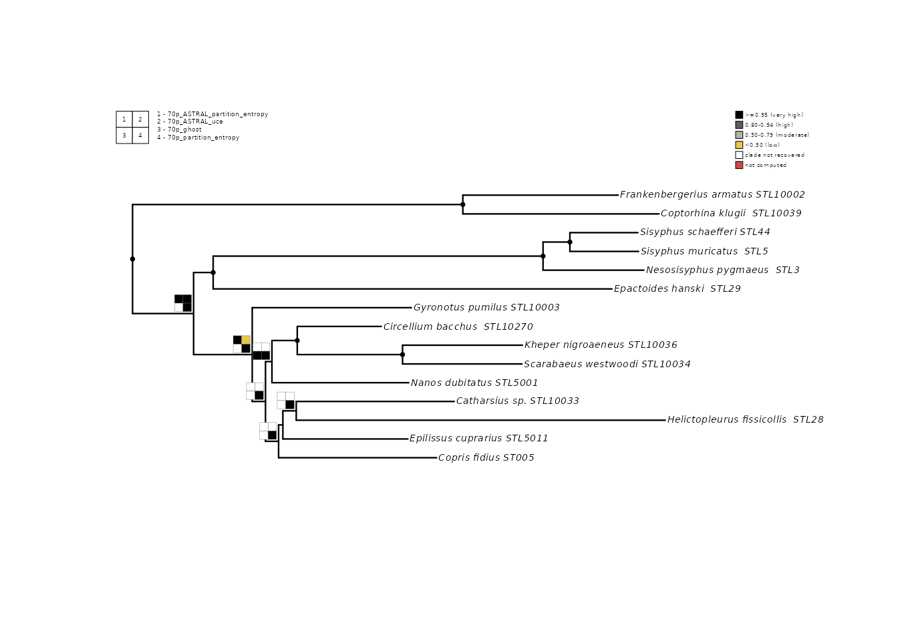
Grid dimensions
By default, phylorug chooses a roughly square grid. Override with
n_rows and n_cols:
#rug with flatend grid
plot_phylorug(backbone, npm, n_rows = 1, n_cols = 4)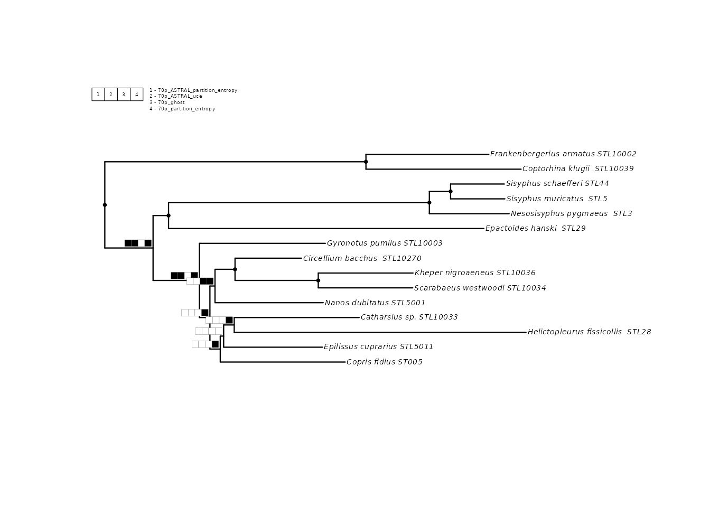
#rug with squired grid
plot_phylorug(backbone, npm, n_rows = 2, n_cols = 2)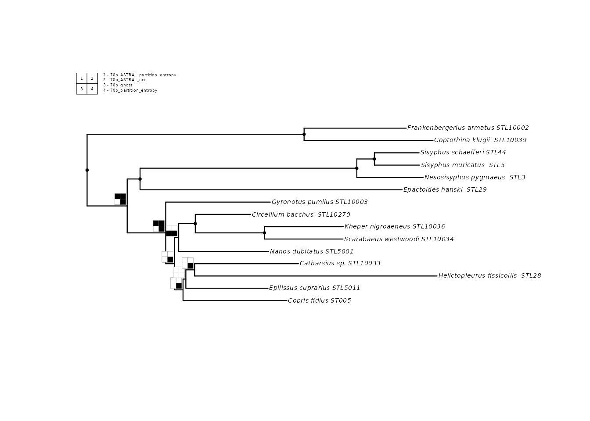
Tree appearance
plot_phylorug() passes additional arguments through
... to ape::plot.phylo(). Common options:
plot_phylorug(backbone, npm, cex = 0.6, font = 3, edge.width = 1.5)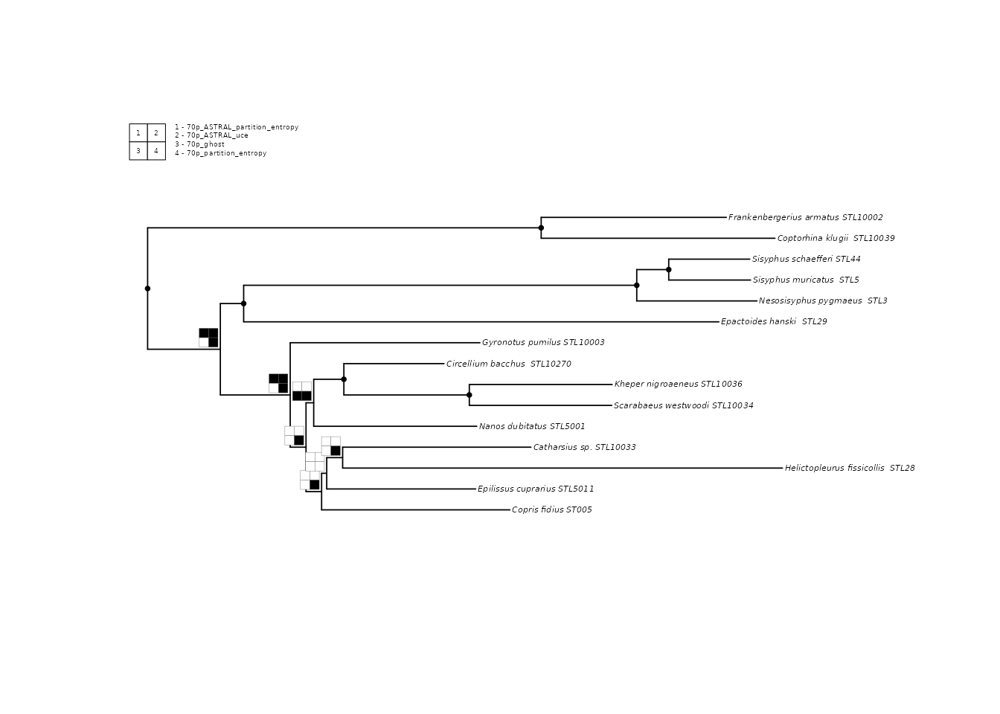
Including the backbone
By default, the backbone does not occupy a cell in the rug (it
trivially recovers every clade, since it defines the topology). Set
include_backbone = TRUE to add it as cell 1:
plot_phylorug(backbone, npm, include_backbone = TRUE)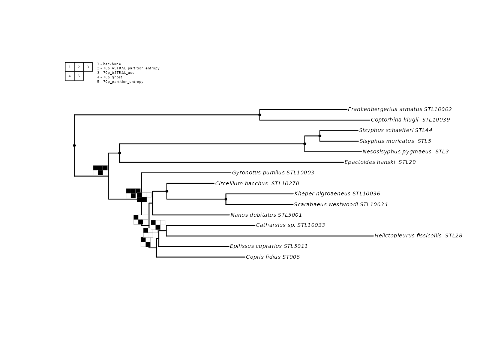
In support mode, pass the backbone’s support metric directly to
include_backbone so it gets binned against the correct
thresholds:
plot_phylorug(backbone, npm,
mode = "support",
include_backbone = "ufboot")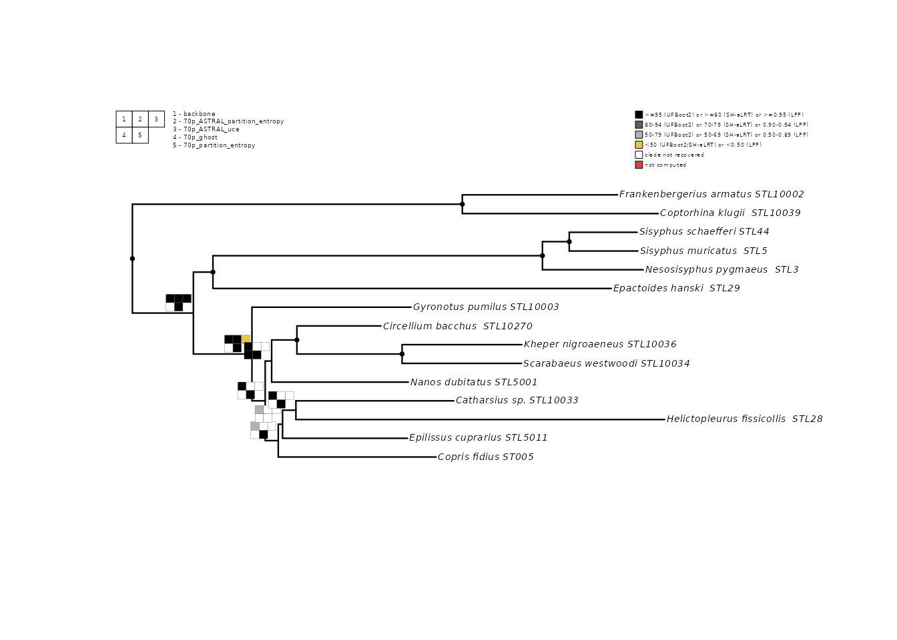
Custom thresholds
Override the default support bins with your own cutoffs:
my_thresholds <- list(
ufboot = c(very_high = 98, high = 90, moderate = 70),
lpp = c(very_high = 0.99, high = 0.90, moderate = 0.70)
)
plot_phylorug(
backbone, npm,
mode = "support",
thresholds = my_thresholds
)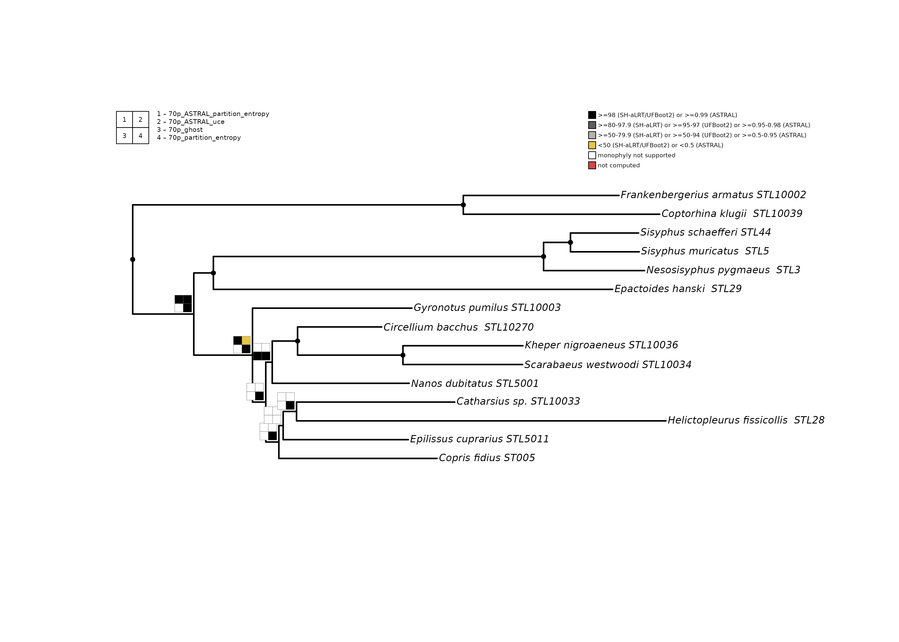
Tips and best practices
Root and prune before translating.
translate_tips() replaces specimen codes with species
names. Once translated, you cannot match outgroup names for rooting.
Always: (1) root, (2) drop outgroup, (3) translate.
One file = one analysis. read_trees()
treats each file as one analysis. A single-tree file returns a
phylo; a file with multiple equally optimal trees (as POY,
TNT, or PAUP* write them) returns a multiPhylo scored as a
pool.
Pool scoring in presence mode. By default
(pool_threshold = 1.0), a clade counts as present only if
every tree in the pool recovers it — equivalent to a strict consensus.
Set pool_threshold = 0.5 for majority rule, or
pool_threshold = 0 to record the raw proportion (e.g., 2
out of 3 gives 0.67). A single-tree analysis always records 1 or 0.
Support mode is not available for pools. Node labels on tied optima are not independent support values. Meaningful support (bootstrap, posterior, SH-aLRT) comes only from explicit resampling or model-based procedures. To visualize support for a parsimony analysis, compute it externally (e.g., map bootstrap replicates onto the strict consensus, per Simmons and Freudenstein 2011), save the summarized tree, and pass that single file to phylorug. Passing raw tied optima into support mode would display arbitrary node labels as though they were support values, producing an artifactual rug.
Wrap bare multiPhylo in a list. If you
construct comparison trees manually, each element of the list passed to
node_presence_matrix() must be a single phylo
or a multiPhylo (a pool from one search). A bare
multiPhylo at the top level is interpreted as one analysis
with multiple tied-optimal trees, not as separate analyses.
Use prune_to_shared() when taxa differ.
If a comparison tree is missing some backbone taxa,
node_presence_matrix() will refuse to proceed (a clade
containing a missing taxon cannot be evaluated). Run
check_taxa() first to see the discrepancies, then
prune_to_shared() to reduce all trees to their common
taxa.
References
- Fu, Y. et al. (2025). Phylogenomic insights into the higher level relationships within Culicomorpha (Diptera). Insect Systematics and Diversity, 9(6), ixaf056.
- Giribet, G. (2003). Stability in phylogenetic formulations and its relationship to nodal support. Systematic Biology, 52(4), 554–564.
- Lopes, F. et al. (2024). From museum drawer to tree: Historical DNA phylogenomics clarifies the systematics of rare dung beetles (Coleoptera: Scarabaeinae) from museum collections. PLOS ONE, 19(12), e0309596.
- Montanaro, G., Lopes, F., Gunter, N.L., Scholtz, C., Davis, A.L., Losacco, F., Rossini, M., Gillett, C.P.D.T., Saxton, N.A., Stone, R.L., Daniel, G.M., and Tarasov, S. (2026). Phylogenomics resolves a 200-year-old puzzle: a revised tribal classification of Afro-Eurasian dung beetles (Coleoptera: Scarabaeinae). bioRxiv. https://doi.org/10.64898/2026.07.22.740134
- Machado, D. J. (2015). YBYRÁ fossile: a command line system for
total evidence dating and sensitivity analysis. BMC
Bioinformatics, 16,
- Sanders, K. L. (2010). Cladescan: exhaustive phylogenetic searches of consensus support in large data sets. Cladistics, 26(6), 598–613.
- Steenwyk, J. L., Li, Y., Zhou, X., Shen, X. X. & Rokas, A. (2023). Incongruence in the phylogenomics era. Nature Reviews Genetics, 24(12), 834–850.
- Wheeler, W. C. (1995). Sequence alignment, parameter sensitivity, and the phylogenetic analysis of molecular data. Systematic Biology, 44(3), 321–331.